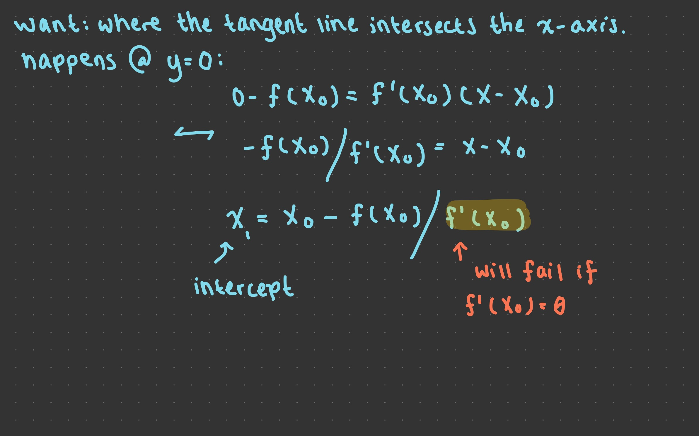

Lecture 12: July 21st, 2023#
Updates and Reminders:
Opportunity to earn four (4) tokens: complete the two evaluations released by UCI EEE evaluations. Details are on Canvas.
Try to get pillow installed as soon as possibe, and let us know if there are any issues. This will be the focus of next week’s lectures, and also crucial for your final creative homework assignment. Instructions are on Canvas under the Week 5 section.
Monday we will go over the instructions for the final creative homework.
Have a nice weekend :)
More on the axis keyword argument#
This is a portion that uses the iPad :)
A very nice question was asked in lecture about the order in which concatenation is done. The first element of the tuple (A,B) specifies the starting array. Then B is appended in the direction that the indices increase.
import numpy as np
Here are some examples along axis = 0.
A = np.zeros((4,4))
A
array([[0., 0., 0., 0.],
[0., 0., 0., 0.],
[0., 0., 0., 0.],
[0., 0., 0., 0.]])
B = np.ones((1,4))
B
array([[1., 1., 1., 1.]])
np.concatenate((A,B),axis=0)
array([[0., 0., 0., 0.],
[0., 0., 0., 0.],
[0., 0., 0., 0.],
[0., 0., 0., 0.],
[1., 1., 1., 1.]])
np.concatenate((B,A),axis=0)
array([[1., 1., 1., 1.],
[0., 0., 0., 0.],
[0., 0., 0., 0.],
[0., 0., 0., 0.],
[0., 0., 0., 0.]])
Here are some examples along axis = 1.
np.concatenate((A,B.T),axis=1)
array([[0., 0., 0., 0., 1.],
[0., 0., 0., 0., 1.],
[0., 0., 0., 0., 1.],
[0., 0., 0., 0., 1.]])
np.concatenate((B.T,A),axis=1)
array([[1., 0., 0., 0., 0.],
[1., 0., 0., 0., 0.],
[1., 0., 0., 0., 0.],
[1., 0., 0., 0., 0.]])
List Comprehension#
Advice: If any of these ideas seem confusing, try coding them first with a for-loop, and then see how they relate to list comprehension.
Why list comprehension:
Readable code (easier than tracing through a for-loop)
More elegant
Length 8 list of all 7s
Recall how we would do this with a for-loop.
mylist = []
for _ in range(8):
mylist.append(7)
mylist
[7, 7, 7, 7, 7, 7, 7, 7]
Here’s the list comprehension way:
[7 for i in range(8)]
[7, 7, 7, 7, 7, 7, 7, 7]
Recall that the underscore is a style convertion used when the variable is not actually used in the code.
[7 for _ in range(8)]
[7, 7, 7, 7, 7, 7, 7, 7]
Let
mylist = [-1,4,2,3,-10,2,4]. Square each element inmylist.
mylist = [-1,4,2,3,-10,2,4]
[x**2 for x in mylist]
[1, 16, 4, 9, 100, 4, 16]
Get the sublist of
mylistcontaing only even numbers.
The point of this example is to show you how to put if statements in list comprehension. This syntax is used if you only have an if statement and no else statement.
[ x for x in mylist if x%2 == 0]
[4, 2, -10, 2, 4]
What if I wanted just the odd numbers?
[ x for x in mylist if x%2 == 1]
[-1, 3]
Replace each negative number in
mylistwith 0.
Here, we learn the syntax for if we want both an if and an else statement. Notice, it is slightly different than the previous example: here, both if and else need to go before the for statement.
mylist
[-1, 4, 2, 3, -10, 2, 4]
[x if x >= 0 else 0 for x in mylist]
[0, 4, 2, 3, 0, 2, 4]
Here is another way of writing the same thing.
[0 if x < 0 else x for x in mylist]
[0, 4, 2, 3, 0, 2, 4]
Let’s see some examples of syntax that gives an error:
[0 if x < 0 for x in mylist else x]
Input In [18]
[0 if x < 0 for x in mylist else x]
^
SyntaxError: invalid syntax
[0 for x in mylist if x < 0 else x]
Input In [19]
[0 for x in mylist if x < 0 else x]
^
SyntaxError: invalid syntax
Make the length 8 list of lists
[[0,1,2],[0,1,2],...,[0,1,2]].
[[0,1,2] for i in range(8)]
[[0, 1, 2],
[0, 1, 2],
[0, 1, 2],
[0, 1, 2],
[0, 1, 2],
[0, 1, 2],
[0, 1, 2],
[0, 1, 2]]
len([[0,1,2] for i in range(8)])
8
Make the length 24 list
[0,1,2,0,1,2,...,0,1,2]
Let’s first recap how we would do this with nested for-loops.
mylist = []
for i in range(8):
for j in range(3):
mylist.append(j)
print(mylist)
print(len(mylist))
[0, 1, 2, 0, 1, 2, 0, 1, 2, 0, 1, 2, 0, 1, 2, 0, 1, 2, 0, 1, 2, 0, 1, 2]
24
This is the nested for-loop equivalent of list comprehension:
[j for i in range(8) for j in range(3)]
[0, 1, 2, 0, 1, 2, 0, 1, 2, 0, 1, 2, 0, 1, 2, 0, 1, 2, 0, 1, 2, 0, 1, 2]
Capitalize each word in the catelogue description of Math 9.
Introduction to computers and programming using Matlab and Mathematica. Representation of numbers and precision, input/output, functions, custom data types, testing/debugging, reading exceptions, plotting data, numerical differentiation, basics of algorithms.
s = '''Introduction to computers and programming using Matlab and Mathematica. Representation of numbers and precision, input/output, functions, custom data types, testing/debugging, reading exceptions, plotting data, numerical differentiation, basics of algorithms.'''
s
'Introduction to computers and programming using Matlab and Mathematica. Representation of numbers and precision, input/output, functions, custom data types, testing/debugging, reading exceptions, plotting data, numerical differentiation, basics of algorithms.'
The three ''' quotes here store the string with line breaks. Notice the difference between the above and below.
s2 = '''Introduction to computers and programming
using Matlab and Mathematica. Representation of numbers and precision, input/output, functions, custom data types, testing/debugging, reading exceptions, plotting data, numerical differentiation,
basics of algorithms.'''
s2
'Introduction to computers and programming \nusing Matlab and Mathematica. Representation of numbers and precision, input/output, functions, custom data types, testing/debugging, reading exceptions, plotting data, numerical differentiation, \nbasics of algorithms.'
#Notice, this just gives the letters and spaces...
[c for c in s]
['I',
'n',
't',
'r',
'o',
'd',
'u',
'c',
't',
'i',
'o',
'n',
' ',
't',
'o',
' ',
'c',
'o',
'm',
'p',
'u',
't',
'e',
'r',
's',
' ',
'a',
'n',
'd',
' ',
'p',
'r',
'o',
'g',
'r',
'a',
'm',
'm',
'i',
'n',
'g',
' ',
'u',
's',
'i',
'n',
'g',
' ',
'M',
'a',
't',
'l',
'a',
'b',
' ',
'a',
'n',
'd',
' ',
'M',
'a',
't',
'h',
'e',
'm',
'a',
't',
'i',
'c',
'a',
'.',
' ',
'R',
'e',
'p',
'r',
'e',
's',
'e',
'n',
't',
'a',
't',
'i',
'o',
'n',
' ',
'o',
'f',
' ',
'n',
'u',
'm',
'b',
'e',
'r',
's',
' ',
'a',
'n',
'd',
' ',
'p',
'r',
'e',
'c',
'i',
's',
'i',
'o',
'n',
',',
' ',
'i',
'n',
'p',
'u',
't',
'/',
'o',
'u',
't',
'p',
'u',
't',
',',
' ',
'f',
'u',
'n',
'c',
't',
'i',
'o',
'n',
's',
',',
' ',
'c',
'u',
's',
't',
'o',
'm',
' ',
'd',
'a',
't',
'a',
' ',
't',
'y',
'p',
'e',
's',
',',
' ',
't',
'e',
's',
't',
'i',
'n',
'g',
'/',
'd',
'e',
'b',
'u',
'g',
'g',
'i',
'n',
'g',
',',
' ',
'r',
'e',
'a',
'd',
'i',
'n',
'g',
' ',
'e',
'x',
'c',
'e',
'p',
't',
'i',
'o',
'n',
's',
',',
' ',
'p',
'l',
'o',
't',
't',
'i',
'n',
'g',
' ',
'd',
'a',
't',
'a',
',',
' ',
'n',
'u',
'm',
'e',
'r',
'i',
'c',
'a',
'l',
' ',
'd',
'i',
'f',
'f',
'e',
'r',
'e',
'n',
't',
'i',
'a',
't',
'i',
'o',
'n',
',',
' ',
'b',
'a',
's',
'i',
'c',
's',
' ',
'o',
'f',
' ',
'a',
'l',
'g',
'o',
'r',
'i',
't',
'h',
'm',
's',
'.']
What if we wanted to get just the words?
#This gives us the list of words; split splits at the spaces.
wordlist = s.split()
caplist = [c.capitalize() for c in wordlist]
''.join(caplist) #no spaces
'IntroductionToComputersAndProgrammingUsingMatlabAndMathematica.RepresentationOfNumbersAndPrecision,Input/output,Functions,CustomDataTypes,Testing/debugging,ReadingExceptions,PlottingData,NumericalDifferentiation,BasicsOfAlgorithms.'
' '.join(caplist) #with spaces
'Introduction To Computers And Programming Using Matlab And Mathematica. Representation Of Numbers And Precision, Input/output, Functions, Custom Data Types, Testing/debugging, Reading Exceptions, Plotting Data, Numerical Differentiation, Basics Of Algorithms.'
f-strings#
Thank you to Phillip for letting us use his name and picking the number 7.
name = "Phillip"
n = 7
Motivation: What if I wanted to type of the sentence “Hello, name, nice to meet you n times”.
Let’s first see a couple clunky ways of doing this, then an “old-fashion” way, and finally the modern way.
print("Hello,", name, "nice to meet you ", n, "times.")
Hello, Phillip nice to meet you 7 times.
Another way would be to use string concatenation. Like usual, we’ll have an error at first.
print("Hello, "+name+",nice to meet you"+n+"times")
---------------------------------------------------------------------------
TypeError Traceback (most recent call last)
Input In [35], in <cell line: 1>()
----> 1 print("Hello, "+name+",nice to meet you"+n+"times")
TypeError: can only concatenate str (not "int") to str
print("Hello, "+name+", nice to meet you "+str(n)+" times")
Hello, Phillip, nice to meet you 7 times
Getting strings printed like this is difficult and takes a lot of time. Especially to get the formatting looking okay.
Next, let’s see the old way of solving this problem. If you are reading old python code, this is likely what you will see. New code should not use this method.
"Hello, {}, nice to meet you {} times.".format(name,n)
'Hello, Phillip, nice to meet you 7 times.'
This method is really nice, but the main drawback is that the variables need to appear in order. For strings with many variables, this can get confusing fast!
Finally, this is the modern method. This is what we call f-strings.
f"Hello, {name}, nice to meet you {n} times."
'Hello, Phillip, nice to meet you 7 times.'
Pretty nice, huh?
String formatting options#
This section of the notes is just to show you some options. I don’t expect you to memorize anything here. Just look up what you need when you need it :)
m = 3**20
m
3486784401
Using an f-string, we can specify how to format output by using the following syntax.
#exponential notation
f"{m:e}"
'3.486784e+09'
#Give 4 decimal places
f"{m:.4f}"
'3486784401.0000'
#Give 20 deciaml places
f"{1/m:.20f}"
'0.00000000028679719908'
1/m
2.8679719907924413e-10
z = 17
f"{z:b}"
'10001'
lambda functions#
Some warnings about lambda functions before we get started:
lambda functions are very similar to function handles in MATLAB.
lambda functions are often called nameless or anonymous functions. This is because they are almost never named or referred to outside of a single line of code.
In this part of lecture, you’ll see me name lambda functions to help give examples/teach. Just keep in mind you typically don’t do this.
Write a function
capthat takes as input a stringsand as output returns the same stringscapitalized.
Here’s how we’d do that with just a regular function. Notice that the entire function after def... takes just one line.
def cap(s):
return s.capitalize()
Here is the basic syntax for lambda functions.
cap = lambda s: s.capitalize()
cap("hello")
'Hello'
cap("picasso")
'Picasso'
Write a function
plusthat takes two inputs and adds them together.
plus = lambda x,y: x+y
plus(17,23)
40
plus("Hello, ","Math 9")
'Hello, Math 9'
Make a \(20 \times 3\) NumPy array of random letters, then concatenate each row of three letters into a single length-3 string using
np.apply_along_axis.
This will be an example of how lambda functions are typically used.
import numpy as np
import string
rng = np.random.default_rng()
dir(string)
['Formatter',
'Template',
'_ChainMap',
'__all__',
'__builtins__',
'__cached__',
'__doc__',
'__file__',
'__loader__',
'__name__',
'__package__',
'__spec__',
'_re',
'_sentinel_dict',
'_string',
'ascii_letters',
'ascii_lowercase',
'ascii_uppercase',
'capwords',
'digits',
'hexdigits',
'octdigits',
'printable',
'punctuation',
'whitespace']
#notice how many more options there are here!
dir(np)
['ALLOW_THREADS',
'AxisError',
'BUFSIZE',
'CLIP',
'ComplexWarning',
'DataSource',
'ERR_CALL',
'ERR_DEFAULT',
'ERR_IGNORE',
'ERR_LOG',
'ERR_PRINT',
'ERR_RAISE',
'ERR_WARN',
'FLOATING_POINT_SUPPORT',
'FPE_DIVIDEBYZERO',
'FPE_INVALID',
'FPE_OVERFLOW',
'FPE_UNDERFLOW',
'False_',
'Inf',
'Infinity',
'MAXDIMS',
'MAY_SHARE_BOUNDS',
'MAY_SHARE_EXACT',
'ModuleDeprecationWarning',
'NAN',
'NINF',
'NZERO',
'NaN',
'PINF',
'PZERO',
'RAISE',
'RankWarning',
'SHIFT_DIVIDEBYZERO',
'SHIFT_INVALID',
'SHIFT_OVERFLOW',
'SHIFT_UNDERFLOW',
'ScalarType',
'Tester',
'TooHardError',
'True_',
'UFUNC_BUFSIZE_DEFAULT',
'UFUNC_PYVALS_NAME',
'VisibleDeprecationWarning',
'WRAP',
'_CopyMode',
'_NoValue',
'_UFUNC_API',
'__NUMPY_SETUP__',
'__all__',
'__builtins__',
'__cached__',
'__config__',
'__deprecated_attrs__',
'__dir__',
'__doc__',
'__expired_functions__',
'__file__',
'__getattr__',
'__git_version__',
'__loader__',
'__mkl_version__',
'__name__',
'__package__',
'__path__',
'__spec__',
'__version__',
'_add_newdoc_ufunc',
'_distributor_init',
'_financial_names',
'_globals',
'_mat',
'_pyinstaller_hooks_dir',
'_pytesttester',
'_version',
'abs',
'absolute',
'add',
'add_docstring',
'add_newdoc',
'add_newdoc_ufunc',
'all',
'allclose',
'alltrue',
'amax',
'amin',
'angle',
'any',
'append',
'apply_along_axis',
'apply_over_axes',
'arange',
'arccos',
'arccosh',
'arcsin',
'arcsinh',
'arctan',
'arctan2',
'arctanh',
'argmax',
'argmin',
'argpartition',
'argsort',
'argwhere',
'around',
'array',
'array2string',
'array_equal',
'array_equiv',
'array_repr',
'array_split',
'array_str',
'asanyarray',
'asarray',
'asarray_chkfinite',
'ascontiguousarray',
'asfarray',
'asfortranarray',
'asmatrix',
'atleast_1d',
'atleast_2d',
'atleast_3d',
'average',
'bartlett',
'base_repr',
'binary_repr',
'bincount',
'bitwise_and',
'bitwise_not',
'bitwise_or',
'bitwise_xor',
'blackman',
'block',
'bmat',
'bool8',
'bool_',
'broadcast',
'broadcast_arrays',
'broadcast_shapes',
'broadcast_to',
'busday_count',
'busday_offset',
'busdaycalendar',
'byte',
'byte_bounds',
'bytes0',
'bytes_',
'c_',
'can_cast',
'cast',
'cbrt',
'cdouble',
'ceil',
'cfloat',
'char',
'character',
'chararray',
'choose',
'clip',
'clongdouble',
'clongfloat',
'column_stack',
'common_type',
'compare_chararrays',
'compat',
'complex128',
'complex256',
'complex64',
'complex_',
'complexfloating',
'compress',
'concatenate',
'conj',
'conjugate',
'convolve',
'copy',
'copysign',
'copyto',
'core',
'corrcoef',
'correlate',
'cos',
'cosh',
'count_nonzero',
'cov',
'cross',
'csingle',
'ctypeslib',
'cumprod',
'cumproduct',
'cumsum',
'datetime64',
'datetime_as_string',
'datetime_data',
'deg2rad',
'degrees',
'delete',
'deprecate',
'deprecate_with_doc',
'diag',
'diag_indices',
'diag_indices_from',
'diagflat',
'diagonal',
'diff',
'digitize',
'disp',
'divide',
'divmod',
'dot',
'double',
'dsplit',
'dstack',
'dtype',
'e',
'ediff1d',
'einsum',
'einsum_path',
'emath',
'empty',
'empty_like',
'equal',
'error_message',
'errstate',
'euler_gamma',
'exp',
'exp2',
'expand_dims',
'expm1',
'extract',
'eye',
'fabs',
'fastCopyAndTranspose',
'fft',
'fill_diagonal',
'find_common_type',
'finfo',
'fix',
'flatiter',
'flatnonzero',
'flexible',
'flip',
'fliplr',
'flipud',
'float128',
'float16',
'float32',
'float64',
'float_',
'float_power',
'floating',
'floor',
'floor_divide',
'fmax',
'fmin',
'fmod',
'format_float_positional',
'format_float_scientific',
'format_parser',
'frexp',
'from_dlpack',
'frombuffer',
'fromfile',
'fromfunction',
'fromiter',
'frompyfunc',
'fromregex',
'fromstring',
'full',
'full_like',
'gcd',
'generic',
'genfromtxt',
'geomspace',
'get_array_wrap',
'get_include',
'get_printoptions',
'getbufsize',
'geterr',
'geterrcall',
'geterrobj',
'gradient',
'greater',
'greater_equal',
'half',
'hamming',
'hanning',
'heaviside',
'histogram',
'histogram2d',
'histogram_bin_edges',
'histogramdd',
'hsplit',
'hstack',
'hypot',
'i0',
'identity',
'iinfo',
'imag',
'in1d',
'index_exp',
'indices',
'inexact',
'inf',
'info',
'infty',
'inner',
'insert',
'int0',
'int16',
'int32',
'int64',
'int8',
'int_',
'intc',
'integer',
'interp',
'intersect1d',
'intp',
'invert',
'is_busday',
'isclose',
'iscomplex',
'iscomplexobj',
'isfinite',
'isfortran',
'isin',
'isinf',
'isnan',
'isnat',
'isneginf',
'isposinf',
'isreal',
'isrealobj',
'isscalar',
'issctype',
'issubclass_',
'issubdtype',
'issubsctype',
'iterable',
'ix_',
'kaiser',
'kron',
'lcm',
'ldexp',
'left_shift',
'less',
'less_equal',
'lexsort',
'lib',
'linalg',
'linspace',
'little_endian',
'load',
'loadtxt',
'log',
'log10',
'log1p',
'log2',
'logaddexp',
'logaddexp2',
'logical_and',
'logical_not',
'logical_or',
'logical_xor',
'logspace',
'longcomplex',
'longdouble',
'longfloat',
'longlong',
'lookfor',
'ma',
'mask_indices',
'mat',
'math',
'matmul',
'matrix',
'matrixlib',
'max',
'maximum',
'maximum_sctype',
'may_share_memory',
'mean',
'median',
'memmap',
'meshgrid',
'mgrid',
'min',
'min_scalar_type',
'minimum',
'mintypecode',
'mkl',
'mod',
'modf',
'moveaxis',
'msort',
'multiply',
'nan',
'nan_to_num',
'nanargmax',
'nanargmin',
'nancumprod',
'nancumsum',
'nanmax',
'nanmean',
'nanmedian',
'nanmin',
'nanpercentile',
'nanprod',
'nanquantile',
'nanstd',
'nansum',
'nanvar',
'nbytes',
'ndarray',
'ndenumerate',
'ndim',
'ndindex',
'nditer',
'negative',
'nested_iters',
'newaxis',
'nextafter',
'nonzero',
'not_equal',
'numarray',
'number',
'obj2sctype',
'object0',
'object_',
'ogrid',
'oldnumeric',
'ones',
'ones_like',
'os',
'outer',
'packbits',
'pad',
'partition',
'percentile',
'pi',
'piecewise',
'place',
'poly',
'poly1d',
'polyadd',
'polyder',
'polydiv',
'polyfit',
'polyint',
'polymul',
'polynomial',
'polysub',
'polyval',
'positive',
'power',
'printoptions',
'prod',
'product',
'promote_types',
'ptp',
'put',
'put_along_axis',
'putmask',
'quantile',
'r_',
'rad2deg',
'radians',
'random',
'ravel',
'ravel_multi_index',
'real',
'real_if_close',
'rec',
'recarray',
'recfromcsv',
'recfromtxt',
'reciprocal',
'record',
'remainder',
'repeat',
'require',
'reshape',
'resize',
'result_type',
'right_shift',
'rint',
'roll',
'rollaxis',
'roots',
'rot90',
'round',
'round_',
'row_stack',
's_',
'safe_eval',
'save',
'savetxt',
'savez',
'savez_compressed',
'sctype2char',
'sctypeDict',
'sctypes',
'searchsorted',
'select',
'set_numeric_ops',
'set_printoptions',
'set_string_function',
'setbufsize',
'setdiff1d',
'seterr',
'seterrcall',
'seterrobj',
'setxor1d',
'shape',
'shares_memory',
'short',
'show_config',
'sign',
'signbit',
'signedinteger',
'sin',
'sinc',
'single',
'singlecomplex',
'sinh',
'size',
'sometrue',
'sort',
'sort_complex',
'source',
'spacing',
'split',
'sqrt',
'square',
'squeeze',
'stack',
'std',
'str0',
'str_',
'string_',
'subtract',
'sum',
'swapaxes',
'sys',
'take',
'take_along_axis',
'tan',
'tanh',
'tensordot',
'test',
'testing',
'tile',
'timedelta64',
'trace',
'tracemalloc_domain',
'transpose',
'trapz',
'tri',
'tril',
'tril_indices',
'tril_indices_from',
'trim_zeros',
'triu',
'triu_indices',
'triu_indices_from',
'true_divide',
'trunc',
'typecodes',
'typename',
'ubyte',
'ufunc',
'uint',
'uint0',
'uint16',
'uint32',
'uint64',
'uint8',
'uintc',
'uintp',
'ulonglong',
'unicode_',
'union1d',
'unique',
'unpackbits',
'unravel_index',
'unsignedinteger',
'unwrap',
'use_hugepage',
'ushort',
'vander',
'var',
'vdot',
'vectorize',
'version',
'void',
'void0',
'vsplit',
'vstack',
'w',
'warnings',
'where',
'who',
'zeros',
'zeros_like']
letters = string.ascii_letters
letters
'abcdefghijklmnopqrstuvwxyzABCDEFGHIJKLMNOPQRSTUVWXYZ'
I really should split these up! Notice the following error…
rng.choice(letters,size=(20,3))
---------------------------------------------------------------------------
TypeError Traceback (most recent call last)
File _generator.pyx:712, in numpy.random._generator.Generator.choice()
TypeError: 'str' object cannot be interpreted as an integer
The above exception was the direct cause of the following exception:
ValueError Traceback (most recent call last)
Input In [57], in <cell line: 1>()
----> 1 rng.choice(letters,size=(20,3))
File _generator.pyx:714, in numpy.random._generator.Generator.choice()
ValueError: a must be a sequence or an integer, not <class 'str'>
arr = rng.choice(list(letters),size=(20,3))
arr
array([['B', 'e', 's'],
['f', 'D', 'd'],
['N', 'e', 'i'],
['X', 't', 'P'],
['R', 'F', 'w'],
['R', 'G', 'H'],
['R', 'E', 'W'],
['O', 'L', 'Z'],
['e', 'u', 'N'],
['T', 'S', 'n'],
['J', 'y', 'O'],
['J', 'U', 'B'],
['M', 'g', 'I'],
['y', 'P', 'p'],
['L', 'v', 'M'],
['V', 'g', 'q'],
['l', 'l', 'E'],
['L', 'W', 'o'],
['z', 'z', 'J'],
['C', 'U', 'V']], dtype='<U1')
This is the basic idea we’ll use to format the entire array.
''.join(arr[2])
'Nei'
Here’s an example of passing a lambda function to a different function.
np.apply_along_axis(lambda row:''.join(row),arr=arr,axis=1)
array(['Bes', 'fDd', 'Nei', 'XtP', 'RFw', 'RGH', 'REW', 'OLZ', 'euN',
'TSn', 'JyO', 'JUB', 'MgI', 'yPp', 'LvM', 'Vgq', 'llE', 'LWo',
'zzJ', 'CUV'], dtype='<U3')
Let
tuplistbe the following list of tuples. Sort the list so that the numbers are increasing.
This is another example of how lambda functions are typically used!
tuplist = [("A",50),("B",70),("C",100),("D",45)]
help(sorted)
Help on built-in function sorted in module builtins:
sorted(iterable, /, *, key=None, reverse=False)
Return a new list containing all items from the iterable in ascending order.
A custom key function can be supplied to customize the sort order, and the
reverse flag can be set to request the result in descending order.
These examples show how to sort by the numbers.
sorted(tuplist,key=lambda tup: tup[1])
[('D', 45), ('A', 50), ('B', 70), ('C', 100)]
sorted(tuplist,key=lambda tup: tup[1],reverse=True)
[('C', 100), ('B', 70), ('A', 50), ('D', 45)]
tuplist[0]
('A', 50)
tuplist[0][1]
50
What if I wanted to sort by the letters instead?
sorted(tuplist,key=lambda tup: tup[0])
[('A', 50), ('B', 70), ('C', 100), ('D', 45)]
sorted(tuplist,key=lambda tup: tup[0],reverse=True)
[('D', 45), ('C', 100), ('B', 70), ('A', 50)]
Formatting a NumPy array#
We skipped this section during live lecture, but I’ll fill in the notes here. It’s not an essential section, just an application of some of the topics we’ve been learning about.
import numpy as np
The following array is kind of hard to read. The goal is for us to format it in a way that is more readable.
rng = np.random.default_rng(seed=1)
arr = rng.normal(size=100)
arr
array([ 3.45584192e-01, 8.21618144e-01, 3.30437076e-01, -1.30315723e+00,
9.05355867e-01, 4.46374572e-01, -5.36953235e-01, 5.81118104e-01,
3.64572396e-01, 2.94132497e-01, 2.84222413e-02, 5.46712987e-01,
-7.36454087e-01, -1.62909948e-01, -4.82119313e-01, 5.98846213e-01,
3.97221075e-02, -2.92456751e-01, -7.81908462e-01, -2.57192241e-01,
8.14218052e-03, -2.75602905e-01, 1.29406381e+00, 1.00672432e+00,
-2.71116248e+00, -1.88901325e+00, -1.74772092e-01, -4.22190412e-01,
2.13642997e-01, 2.17321931e-01, 2.11783876e+00, -1.11202076e+00,
-3.77605007e-01, 2.04277161e+00, 6.46702996e-01, 6.63063372e-01,
-5.14006372e-01, -1.64807517e+00, 1.67464744e-01, 1.09014088e-01,
-1.22735205e+00, -6.83226662e-01, -7.20436797e-02, -9.44751623e-01,
-9.82699679e-02, 9.54830275e-02, 3.55862371e-02, -5.06291658e-01,
5.93748072e-01, 8.91166954e-01, 3.20848305e-01, -8.18230227e-01,
7.31652284e-01, -5.01440018e-01, 8.79160618e-01, -1.07178742e+00,
9.14467203e-01, -2.00634546e-02, -1.24874889e+00, -3.13899472e-01,
5.41022788e-02, 2.72791339e-01, -9.82188125e-01, -1.10737305e+00,
1.99584533e-01, -4.66749617e-01, 2.35505612e-01, 7.59519522e-01,
-1.64878737e+00, 2.54388117e-01, 1.22464697e+00, -2.97526844e-01,
-8.10814583e-01, 7.52243827e-01, 2.53446516e-01, 8.95883071e-01,
-3.45215710e-01, -1.48181827e+00, -1.10010765e-01, -4.45828153e-01,
7.75323822e-01, 1.93632848e-01, -1.63084923e+00, -1.19516308e+00,
8.83789037e-01, 6.79765017e-01, -6.40243366e-01, -1.04879657e-03,
4.45573554e-01, 4.68404336e-01, 8.76242196e-01, 2.56485627e-01,
-9.48283390e-02, -2.58848065e-01, 1.05574280e+00, -2.25085428e+00,
-1.38655325e-01, 3.30001040e-02, -1.42534896e+00, 3.32813613e-01])
Take a look at the function signature below. We’ll be focusing on the formatter argument.
help(np.set_printoptions)
Help on function set_printoptions in module numpy:
set_printoptions(precision=None, threshold=None, edgeitems=None, linewidth=None, suppress=None, nanstr=None, infstr=None, formatter=None, sign=None, floatmode=None, *, legacy=None)
Set printing options.
These options determine the way floating point numbers, arrays and
other NumPy objects are displayed.
Parameters
----------
precision : int or None, optional
Number of digits of precision for floating point output (default 8).
May be None if `floatmode` is not `fixed`, to print as many digits as
necessary to uniquely specify the value.
threshold : int, optional
Total number of array elements which trigger summarization
rather than full repr (default 1000).
To always use the full repr without summarization, pass `sys.maxsize`.
edgeitems : int, optional
Number of array items in summary at beginning and end of
each dimension (default 3).
linewidth : int, optional
The number of characters per line for the purpose of inserting
line breaks (default 75).
suppress : bool, optional
If True, always print floating point numbers using fixed point
notation, in which case numbers equal to zero in the current precision
will print as zero. If False, then scientific notation is used when
absolute value of the smallest number is < 1e-4 or the ratio of the
maximum absolute value to the minimum is > 1e3. The default is False.
nanstr : str, optional
String representation of floating point not-a-number (default nan).
infstr : str, optional
String representation of floating point infinity (default inf).
sign : string, either '-', '+', or ' ', optional
Controls printing of the sign of floating-point types. If '+', always
print the sign of positive values. If ' ', always prints a space
(whitespace character) in the sign position of positive values. If
'-', omit the sign character of positive values. (default '-')
formatter : dict of callables, optional
If not None, the keys should indicate the type(s) that the respective
formatting function applies to. Callables should return a string.
Types that are not specified (by their corresponding keys) are handled
by the default formatters. Individual types for which a formatter
can be set are:
- 'bool'
- 'int'
- 'timedelta' : a `numpy.timedelta64`
- 'datetime' : a `numpy.datetime64`
- 'float'
- 'longfloat' : 128-bit floats
- 'complexfloat'
- 'longcomplexfloat' : composed of two 128-bit floats
- 'numpystr' : types `numpy.string_` and `numpy.unicode_`
- 'object' : `np.object_` arrays
Other keys that can be used to set a group of types at once are:
- 'all' : sets all types
- 'int_kind' : sets 'int'
- 'float_kind' : sets 'float' and 'longfloat'
- 'complex_kind' : sets 'complexfloat' and 'longcomplexfloat'
- 'str_kind' : sets 'numpystr'
floatmode : str, optional
Controls the interpretation of the `precision` option for
floating-point types. Can take the following values
(default maxprec_equal):
* 'fixed': Always print exactly `precision` fractional digits,
even if this would print more or fewer digits than
necessary to specify the value uniquely.
* 'unique': Print the minimum number of fractional digits necessary
to represent each value uniquely. Different elements may
have a different number of digits. The value of the
`precision` option is ignored.
* 'maxprec': Print at most `precision` fractional digits, but if
an element can be uniquely represented with fewer digits
only print it with that many.
* 'maxprec_equal': Print at most `precision` fractional digits,
but if every element in the array can be uniquely
represented with an equal number of fewer digits, use that
many digits for all elements.
legacy : string or `False`, optional
If set to the string `'1.13'` enables 1.13 legacy printing mode. This
approximates numpy 1.13 print output by including a space in the sign
position of floats and different behavior for 0d arrays. This also
enables 1.21 legacy printing mode (described below).
If set to the string `'1.21'` enables 1.21 legacy printing mode. This
approximates numpy 1.21 print output of complex structured dtypes
by not inserting spaces after commas that separate fields and after
colons.
If set to `False`, disables legacy mode.
Unrecognized strings will be ignored with a warning for forward
compatibility.
.. versionadded:: 1.14.0
.. versionchanged:: 1.22.0
See Also
--------
get_printoptions, printoptions, set_string_function, array2string
Notes
-----
`formatter` is always reset with a call to `set_printoptions`.
Use `printoptions` as a context manager to set the values temporarily.
Examples
--------
Floating point precision can be set:
>>> np.set_printoptions(precision=4)
>>> np.array([1.123456789])
[1.1235]
Long arrays can be summarised:
>>> np.set_printoptions(threshold=5)
>>> np.arange(10)
array([0, 1, 2, ..., 7, 8, 9])
Small results can be suppressed:
>>> eps = np.finfo(float).eps
>>> x = np.arange(4.)
>>> x**2 - (x + eps)**2
array([-4.9304e-32, -4.4409e-16, 0.0000e+00, 0.0000e+00])
>>> np.set_printoptions(suppress=True)
>>> x**2 - (x + eps)**2
array([-0., -0., 0., 0.])
A custom formatter can be used to display array elements as desired:
>>> np.set_printoptions(formatter={'all':lambda x: 'int: '+str(-x)})
>>> x = np.arange(3)
>>> x
array([int: 0, int: -1, int: -2])
>>> np.set_printoptions() # formatter gets reset
>>> x
array([0, 1, 2])
To put back the default options, you can use:
>>> np.set_printoptions(edgeitems=3, infstr='inf',
... linewidth=75, nanstr='nan', precision=8,
... suppress=False, threshold=1000, formatter=None)
Also to temporarily override options, use `printoptions` as a context manager:
>>> with np.printoptions(precision=2, suppress=True, threshold=5):
... np.linspace(0, 10, 10)
array([ 0. , 1.11, 2.22, ..., 7.78, 8.89, 10. ])
np.set_printoptions(formatter={'float': lambda x: f"{x:.4f}" })
Now run the code that generates arr above again and notice the differences. We told NumPy to only print the first 4 decimals of each number.
Somehow the spacing still looks a little off. We could try adding a plus to the positive numbers to get the alignment to look a little better.
np.set_printoptions(formatter={'float': lambda x: f"{x:+.4f}" })
Run arr again and observe the difference. This is already looking a lot better, but maybe the + signs are distracting. Instead of putting a plus, we could put a space.
np.set_printoptions(formatter={'float': lambda x: f"{x: .4f}" })
Run arr one last time and see the difference. Not too bad :)
Mathematical introduction to Newton’s method#
In this portion of the lecture, we went through a derivation of the formula for Newton’s method, and saw a few examples on Desmos. Here is the link to the Desmos example. Toggle the functions/points on and off to recreate how we traced through the problem in lecture.

Appyling at a good point#
Let \(f(x) = x^3 - 2x + 2\). Starting at \(x_0 = -1.5\), apply Newton’s method three times to estimate a root of \(f\).
import matplotlib.pyplot as plt
import numpy as np
f = lambda x: x**3-2*x+2
df = lambda x: 3*x**2 - 2
newt = lambda z: z - f(z)/df(z)
The idea next is that we’ll create an array that holds our starting value, z, and the results from all our iterations of Newton’s method.
z = -1.5
reps = 3
arr = np.zeros(reps+1)
arr[0] = z #set the starting value to z
arr
array([-1.5000, 0.0000, 0.0000, 0.0000])
for i in range(reps):
arr[i+1] = newt(arr[i])
arr
array([-1.5000, -1.8421, -1.7728, -1.7693])
f(arr)
array([ 1.6250, -0.5667, -0.0262, -0.0001])
plt.style.use('seaborn-darkgrid')
fig, ax = plt.subplots()
x = np.linspace(-2,2,1000)
ax.plot(x,f(x));

We’ll wrap up these last examples on Monday :)
Applying at a worse point#
Let \(f(x) = x^3 - 2x + 2\). Starting at \(x_0 = -0.5\), apply Newton’s method three times to estimate a root of \(f\).
Analyzing Newton’s method#
Analyzing Newton’s method#
Let \(f(x) = x^3 - 2x + 2\). For each value of \(z\) in np.linspace(-2,2,100), apply Newton’s method 7 times and call the result \(z_7\). For how many of these 100 vlaues do we have \(-0.001 < f(z_7) < 0.001\)?